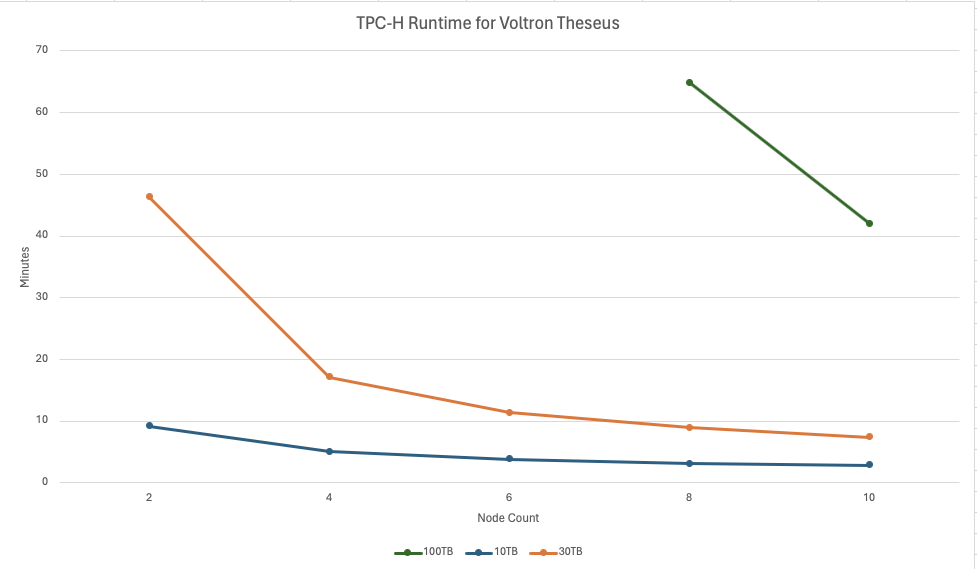

If I’d been born ten to twenty years earlier, I’d no doubt have been a gearhead looking to eke out as much performance from a ICE engine as possible. Instead I’ve spent thirty years performance tuning computers and drooling over super computers the way some guys look at muscle cars. I spent most of the 90’s constantly upgrading and overclocking chips and memory while watching Cray dominate the Top500. In the early 00’s I got excited about the prospect of cobbling together a Souper Computer while living next door to Oak Ridge labs.
My first real brush with power came in 2002 when I convinced my manager that we really needed a Sun Fire 280R, which sported a pair of UltraSPARC III RISC processors. (We didn’t really need it, but that’s what year end government budgets can do) I graduated to database appliances like the IBM Neteeza with its asymmetric massively parallel processing architecture and fpga cards that prefiltered data. Netezza’s hardware architecture gave it a performance advantage over other mpp platforms like Greenplum that could run on commodity hardware. Performance came at the price of easy node scalability.
Moving data platforms to the cloud meant most of the performance gains had to be made in the software because the hardware was all commodity. There has been very little deployment of data architectures leveraging FPGA, GPU, or InfiniBand. (Amazon AQUA for Redshift being the exception) We traded peak performance for elasticity and the easy ability to scale out. Andy Pavlo has claimed that OLAP engine components are becoming commoditized, and George Fraser has shown that the leading cloud data warehouses are converging on performance. So it was very exciting when Voltron Data published benchmark results for their Theseus query engine with eye-watering results.
If you aren’t familiar with Voltron Data, they came together a few years ago to build a composable data ecosystem around Apache Arrow. Voltron provides guidance, development and support for open source projects like Substrait, Ibis, and Velox. Selling enterprise support is great, but to fund the company they need a product and that’s where Theseus comes in. Theseus is an outgrowth of BlazingSQL, a GPU accelerated SQL engine built on top of the RAPIDS ecosystem. GPUs have been great for super-fast, highly parallel, simple processing, but weren’t thought suitable for the complex data operations in analytic queries.

The Voltron Theseus benchmark results are impressive in that they show a GPU query engine can perform at scale and that performance is incredibly fast. I’m reproducing the Theseus benchmark numbers in isolation because fair benchmarks are indeed hard. The first thing that jumps our is the performance curve flattens out incredibly quickly as nodes scale up. Tripling the data volume at 10 nodes only increases the run time for the whole TPC-H benchmark by 88%, less than a 5 minute difference.
The Theseus benchmark was performed on a cluster of bare metal servers running 8 x Nvidia SXM4 A100 GPUs, 4Tbs of memory, NVMe drives, and Infiniband interconnects. It’s unclear how they calculate the cost per hours for this cluster. Are they amortizing the cost over 3 or 5 years? Either way, that Formula 1 setup has a steep upfront cost.
You might wonder who needs this in an age where GPUs cost a mint? Voltron is targeting customers with petabyte scale data who also need to execute queries that exceed 100TBs. It’s a conjunction, lots of companies have petabytes of data but it’s dispersed across use case where queries can easily be executed on BigQuery or Databricks. I’m sure target customers with the need and deep pockets include government security agencies (NSA, CIA, DoD), telecom, oil & gas, among others.
By comparison the Spark cluster is fairly pedestrian running older EC2 instances and vanilla Spark. It would have been more interesting seeing Spark run on a more recent generation of EC2 instance, like the R7i, rather than the now dated R5 series. Maybe enabling RDMA support for Spark to take advantage of AWS’s Elastic Fabric Adapter. Best would have been both better hardware and the latest Spark engines like comet or gluten